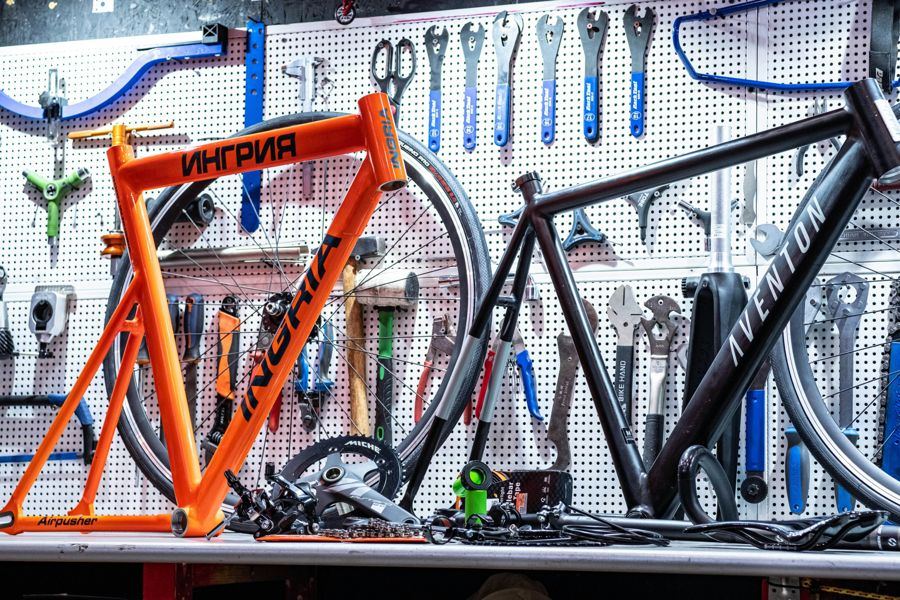

Alexander Lindqvist
Jag heter Alexander, bor i Borlänge och pluggar systemvetenskap. När jag inte sitter med studierna gillar jag att cykla, träna och hålla koll på ny teknik.

Bakgrund
Innan jag började på högskolan jobbade jag i en cykelverkstad med reparationer, kundservice och tidsbokning. På verkstaden skötte vi bokningarna på papper, och när det blev mycket att göra blev det snabbt rörigt. Det var där jag började fundera på hur enkla digitala system kan göra vardagen smidigare.
Mål
Efter studierna vill jag arbeta med webbutveckling. Mitt mål är att bygga tydliga och användbara webbplatser som faktiskt hjälper människor i vardagen.